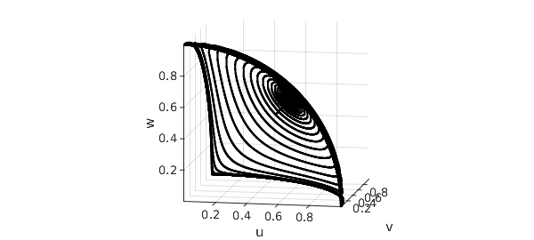
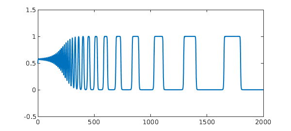
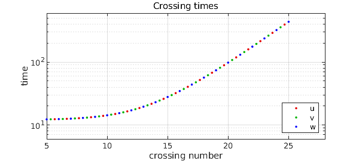

Here is a system of three nonlinear ODEs that has interesting behavior: with $0 < b < 1 < c$, consider
$$ u' = u(1-u^2-bv^2-cw^2), $$ $$ v' = v(1-v^2-bw^2-cu^2), $$ $$ w' = w(1-w^2-bu^2-cv^2). $$
Notice that the three variables are all the same, treated cyclically. The system has a fixed point whenever one variable is equal to $1$ and the others are equal to $0$. Suppose, say, $u\approx 1$ and $v, w \approx 0$. Then $v$ will decay exponentially since $c>1$, whereas $w$ will increase exponentially since $b < 1$. For certain choices of $b$ and $c$ we end up with a kind of alternation, with $u, w, v, u, w, \dots$ taking values close to $1$ in turn.
Here is an illustration with $b=0.55$, $c=1.5$, and initial conditions $u=0.5$, $v=w=0.49$. The plot shows $v(t)$ for $t\in [0,800]$.
b = 0.55; c = 1.5;
N = chebop(0,800);
N.op = @(t,u,v,w) [ ...
diff(u) - u.*(1 - u.^2 - b*v.^2 - c*w.^2)
diff(v) - v.*(1 - v.^2 - b*w.^2 - c*u.^2)
diff(w) - w.*(1 - w.^2 - b*u.^2 - c*v.^2)];
N.lbc = @(u,v,w) [u-0.5; v-0.49; w-0.49];
[u,v,w] = N\0;
LW = 'linewidth'; plot(v,LW,1.2)
ylim([-0.5 1.5])
On a 3D plot, we can see how the orbit swings from one corner in the $u,v,w$ octant to the next to the next. Most of the time is spent near the corners, where the velocity is low. The orbit is approaching a heteroclinic limit cycle between the three fixed points $(1,0,0)$, $(0,1,0)$ and $(0,0,1)$.
clf, plot3(u,v,w,'k'), view(10,10), axis equal, grid on xlabel u, ylabel v, zlabel w

These equations come from [3], where a plot is given on p. 201. (The caption there reports initial conditions $v=w=0.499$, but this is a misprint; we thank Phil Holmes for confirming this by email 23 Feb. 2015.) The discussion in [3] is adapted from the paper [2] by Guckenheimer and Holmes, which in turn gives credit to a related discussion by Busse and Heikes [1] in the context of Rayleigh-Benard convection.
Let's compute a longer orbit, to $t=2000$:
clf, N.domain = [0 2000]; [u,v,w] = N\0; plot(v,LW,0.9), ylim([-0.5 1.5])

The intervals are getting exponentially longer as the orbit winds in towards the limit cycle. To quantify this, we can compute three vectors of crossing times at which $u$, $v$, and $w$ pass through the value $0.5$ with positive derivative:
tu = roots(u-0.5); up = diff(u); tu = tu(up(tu)>0); nu = length(tu); tv = roots(v-0.5); vp = diff(v); tv = tv(vp(tv)>0); nv = length(tv); tw = roots(w-0.5); wp = diff(w); tw = tw(wp(tw)>0); nw = length(tw);
A semilog plot of the differences between these numbers reveals the exponential growth, with red, green, and blue corresponding to $u$, $v$, and $w$.
clf, FS = 'fontsize'; MS = 'markersize';
semilogy(2/3+(2:nu),diff(tu),'.',MS,14,'color',[.9 0 0 ]), hold on
semilogy(1/3+(2:nv),diff(tv),'.',MS,14,'color',[0 .7 0 ])
semilogy(0/3+(2:nw),diff(tw),'.',MS,14,'color',[0 0 1])
xlabel('crossing number',FS,10), ylabel('time',FS,10)
title ('Crossing times',FS,14), grid on, axis([5 28 6 600])
legend('u','v','w','location','southeast')

References
-
F. H. Busse and K. E. Heikes, Convection in a rotating layer: a simple case of turbulence, Science 208 (1980), 173-175.
-
J. Guckenheimer and P. Holmes, Structurally stable hereroclinic cyles, Math. Proc. Camb. Phil. Soc. 103 (1988), 189-192.
-
P. Holmes, J. L. Lumley, G. Berkooz, and C. W. Rowley, Turbulence, Coherent Structues, Dynamical Systems and Symmetry, 2nd ed., Cambridge, 2012.